Our Energy Nexus is an interactive installation that reimagines energy as a collective force. Individual actions cannot solve environmental crises—which require systemic policy changes and corporate accountability—and so this installation explores awareness and hope as the starting points of collective action:
“Hope is crucial to the act of protest: hope is what allows us to feel that what angers us is not inevitable, even if transformation can sometimes feel impossible. […] If we give up hope, of course, then there is no hope. So the emotion of hope keeps something open.” (Sarah Ahmed, The Cultural Politics of Emotion, pg 184-85).
The installation begins with a visualization of a dark sky clouded by air pollution. The rendering of the pollution is based on live data from the World Air Quality Index. On a secondary interface, users can contribute their “energy” through skin temperature readings, generating a unique star inspired by thermal radiation science and Wien’s Law, in which the visible color of radiant energy is defined by its temperature. Users can further customize their star, selecting an accent color that determines its destination in the main visualization. Finally, the star is sent to the shared visualization which triggers a speculative pollution reduction—a poetic device representing coordinated real-world impact.
Energy has multiple meanings in this work.
Physically, it represents the warmth of a living body, the color of stars, and the tangible source of both the problem we face and its solution.
Much of the air pollution visualized in the installation stems from the ways we currently produce and consume energy.
Yet the same concept—energy—also holds the potential for transformation.
Clean, shared, and reimagined energy systems are necessary for a future without pollution.
Maintaining hope that this is possible is an important part of maintaining energy to work towards this version of the future.
Symbolically, energy becomes a metaphor for agency: our capacity to act, collaborate, and shape the world that we share, while the act of stargazing becomes a gesture of hope.
This piece is designed as a meditation on collective potential, not an end in itself; clearing skies requires concrete action and sustained energy.
This work was initially supported by Lexus as part of their “Discover Together” initiative at Milan Design Week,
which platforms emerging creators.
We were asked to incorporate their “Black Butterfly” screens with large-scale projection, shaping our interactive approach.
The client supported our creative freedom; our choice to work with environmental data stems from our team's interests.
The conceptual development of the project was driven by a few key considerations. As mentioned above, interactivity was a core requirement, but beyond that the creative brief was very open. We learned about the Discover Together theme for that year, “A-Un”, which was “the feeling of breathing in unison”. This provided just a bit more inspiration for brainstorming a unifying form for the visualization. We wanted there to be a certain level of depth and density, while still being engaging for a broad audience. We decided we wanted to visualize air quality data, as air pollution is a significant issue in Milan. We also felt there was an opportunity to utilize personal biometric data to enrich the experience. Energy emerged as a core theme early on in the project, as we thought about different biosensors that could be used to capture non-identifying data from installation goers. We thought about skin temperature, heart rate, electrodermal activity and sound or voice data.
As we began to think about defining a visual form for the visualization, I thought about clouds, snakes, chains, fireworks. Then, I thought of the night sky, where the pollution is clouding the stars, and each person’s energy could form a star breaking through the smog and forming constellations. This is where the core concept emerged.
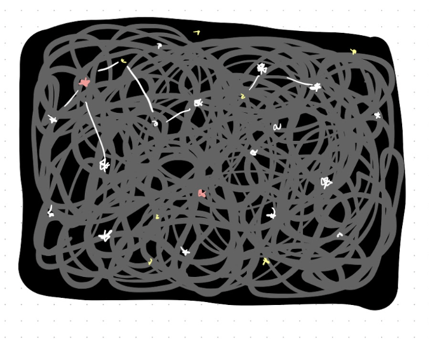
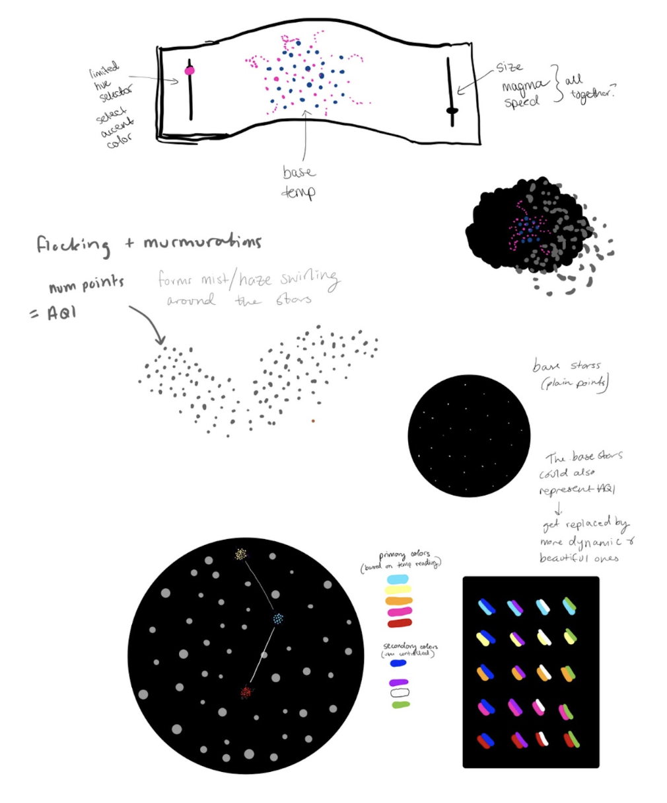
The interface design was driven by the need to create a user-friendly entry point into the experience for a broad audience. Because it is still in development, the Black Butterfly screen had very low pixel density and resolution, which presented a unique challenge. We decided to embrace this as a feature of the design, rather than fight against it, and so we took a pixel based approach and kept the interface controls simple, so that it would translate well to the screen. This ended up giving a unique glowing effect to the design.
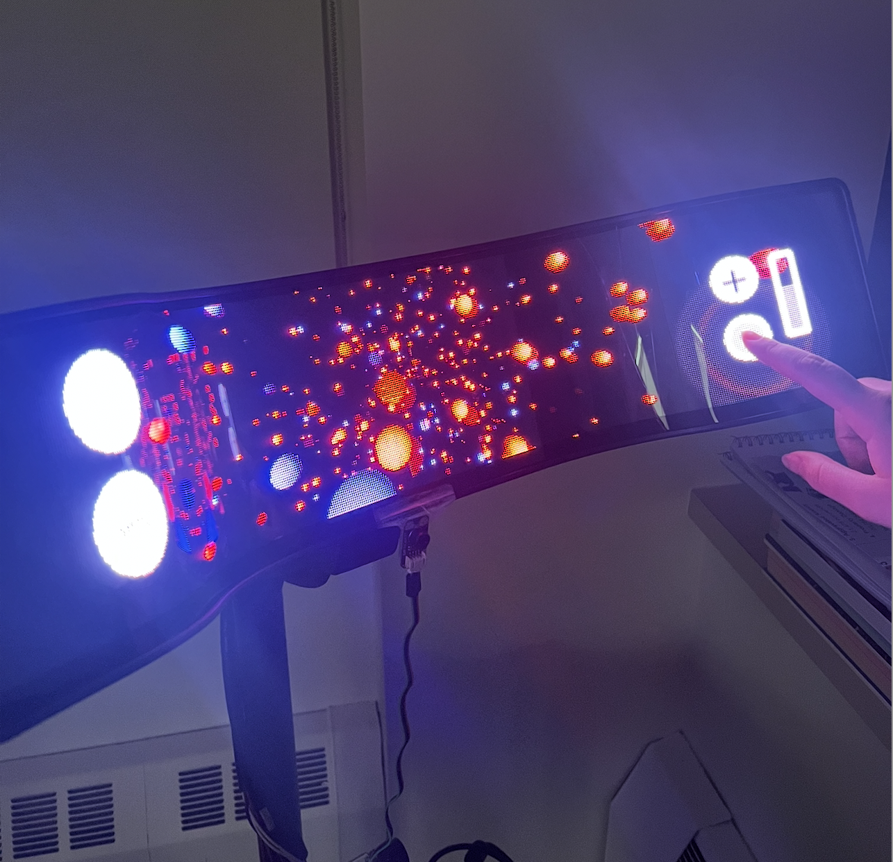
The sensor was attached at the base of the Black Butterfly screen. We used non-contact infrared temperature sensors with a 5 degree field of vision. While we did some initial testing with a version of the sensor with a wider field of vision, we found that this produced inconsistent readings if people didn't hover their hand very close to the sensor. We also 3D printed custom mounts to attach the sensor to the base of the screen.
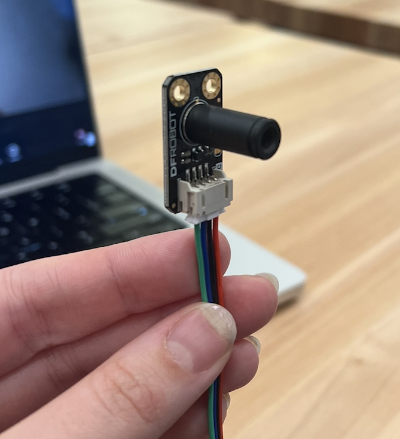
The Air Quality Index data in this work is accessed from the World Air Quality Index, using their API. In the first iteration of this work, air quality data was accessed from a single station located in Milan, Italy. In the most recent iteration, we have added additional cities for the program to cycle through, and we have also fine-tuned the data processing logic. Our program now identifies all of the active air quality monitoring stations within a 12 mile radius of each city center, and then averages the AQI readings from all of those stations to determine the AQI value that is then visualized. This helps to create a more accurate representation of the air quality in each city, as air quality can vary signficantly across areas of a city even within a few miles.
We explored two approaches for visualizing the air quality data. In the first prototype, we defined a particle system whose movement was driven by flocking behaviour to create dynamic clusters and patterns. In the second prototype, we created a grid of particles whose opacity shifts dynamically based on Perlin Noise. We ended up moving forward with the first prototype, as it created more open space on the canvas by which the stars could be seen through. We used a triangle shape for the particles in the final version, as the sharp edges created more contrast against the round particles of the star, and also seemed more semantically appropriate for the subject matter.
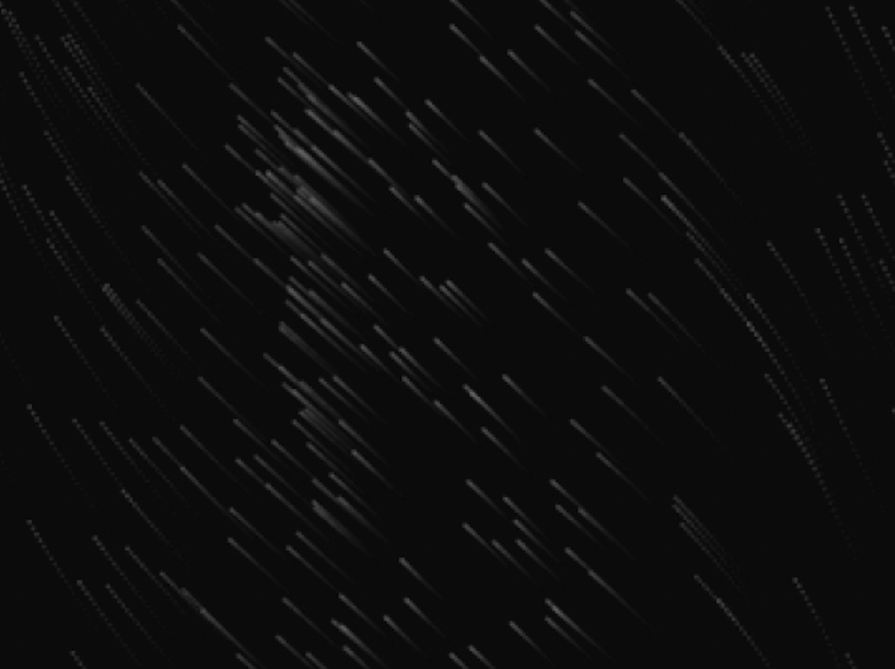
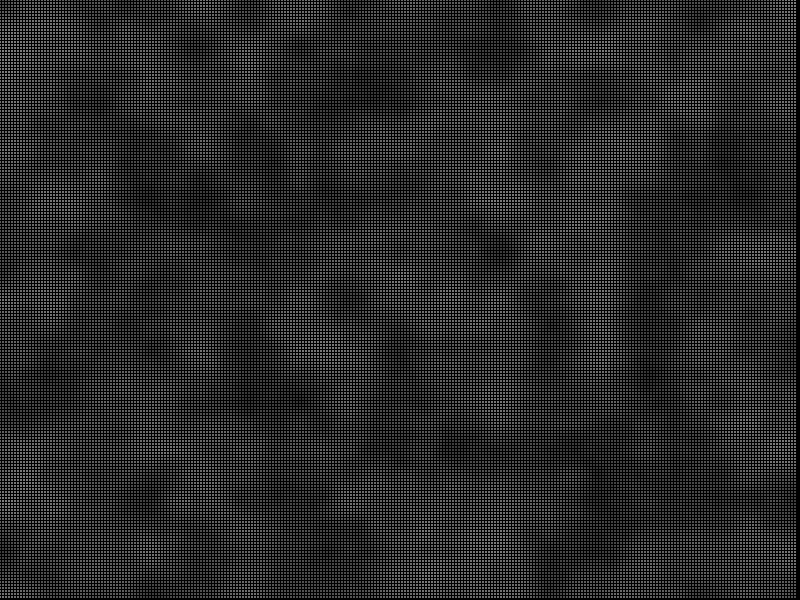
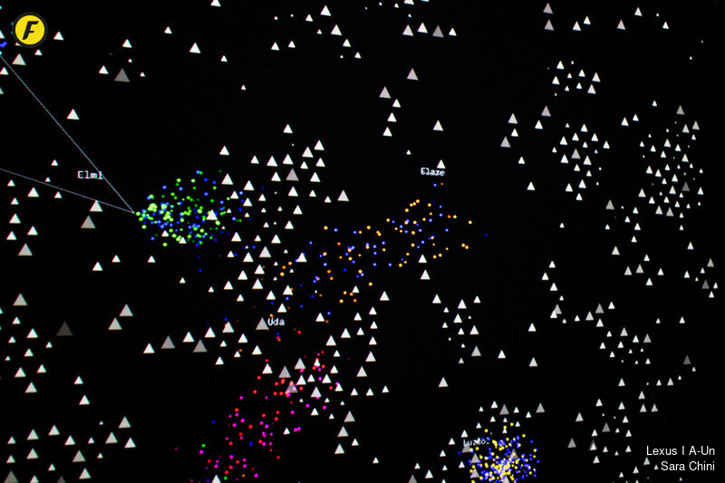
We placed 5 galaxies on the main projection rotating around a central point. Each galaxy corresponds to an accent color choice available to users on the controller when they create their star.
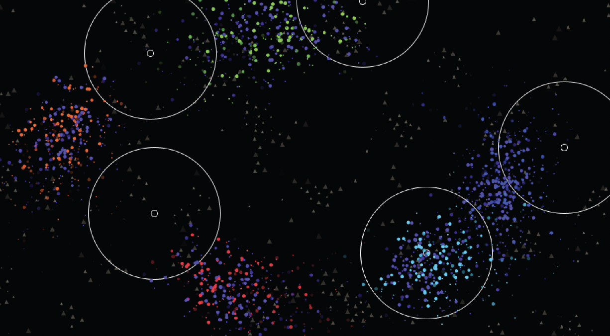
Every time a star is added, there is an opportunity to form a constellation if the previous star was placed in a different galaxy.
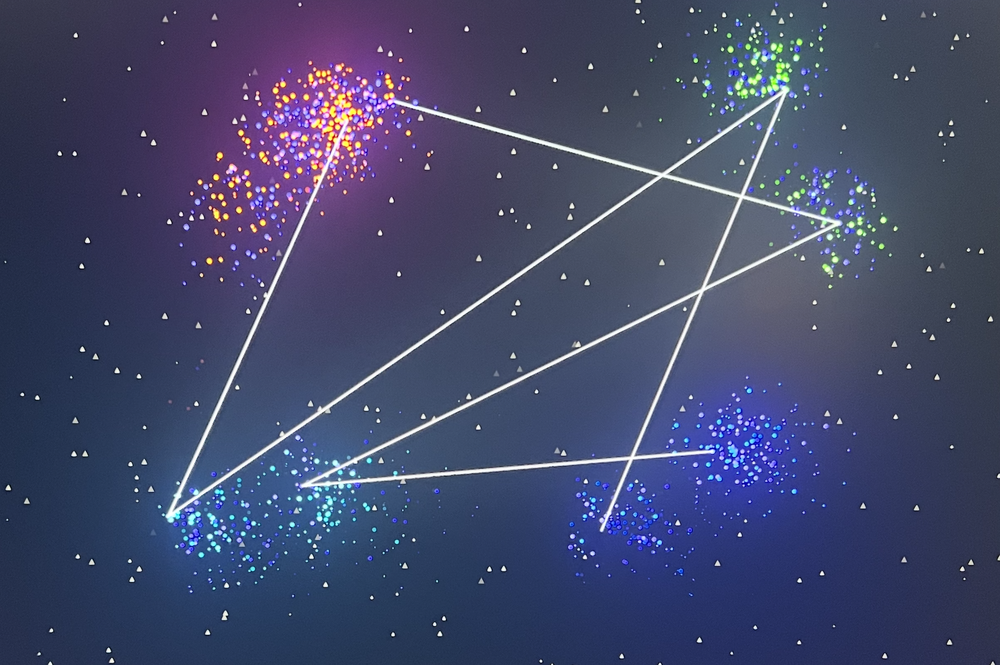
After just 3 months of development, we installed the piece at Milan Design Week in April 2025. The installation was up for one week. The reception of the work was positive, and was awarded second place in the Fuorisalone Audience Award as part of the Lexus A-Un exhibition, as well as a special mention in the technology category, and the Design Schools Special Mention. We were thrilled to have the opportunity to present this work in such a high-profile context, and we hope that the piece sparked meaningful conversations about collective action, connection, and the importance of hope in addressing environmental challenges among the diverse audience that visited the intallation.
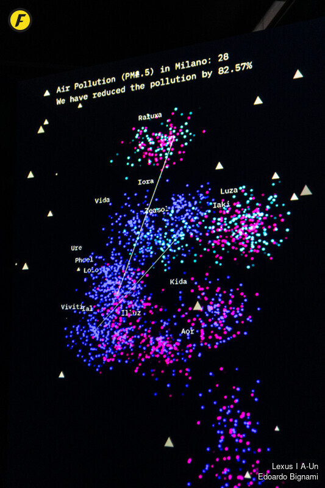
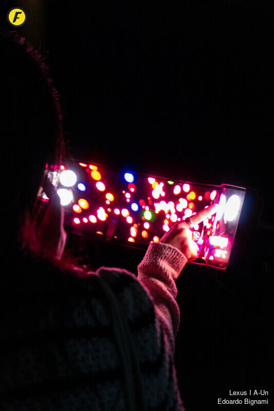
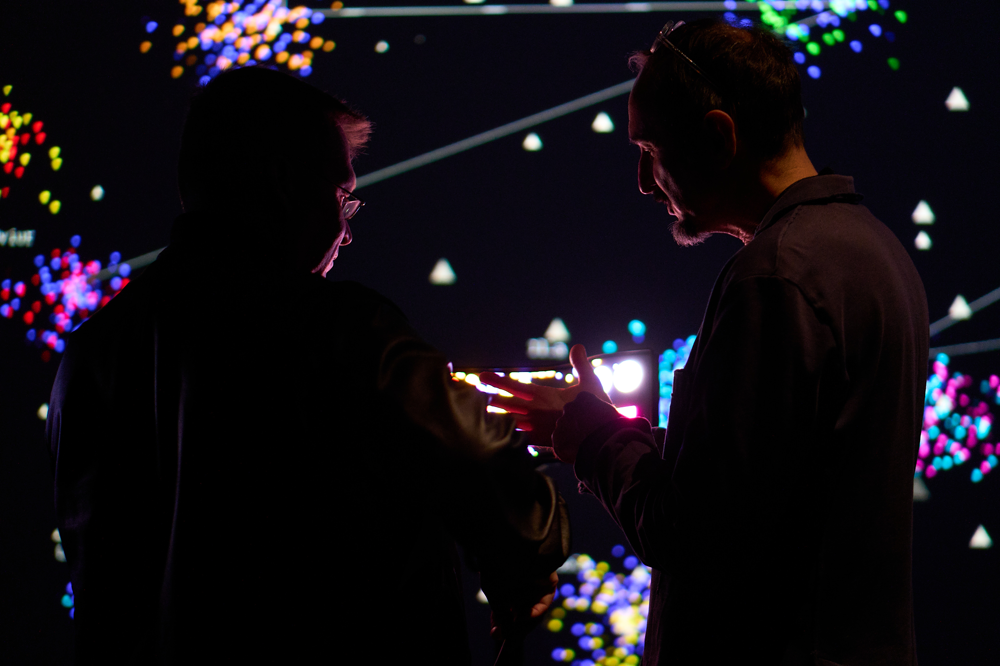
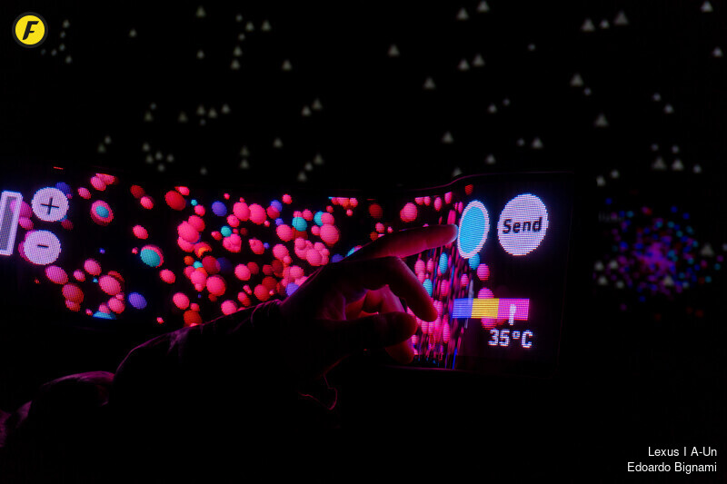
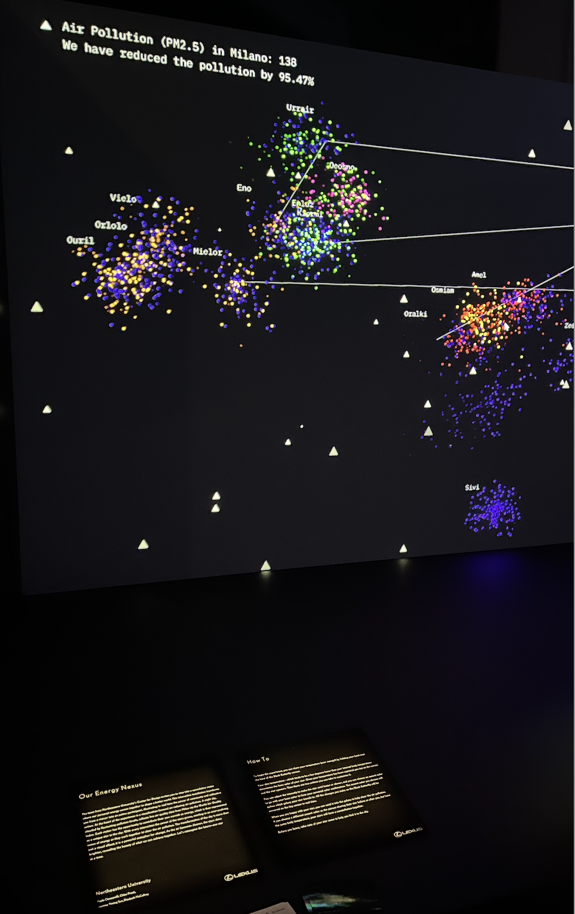
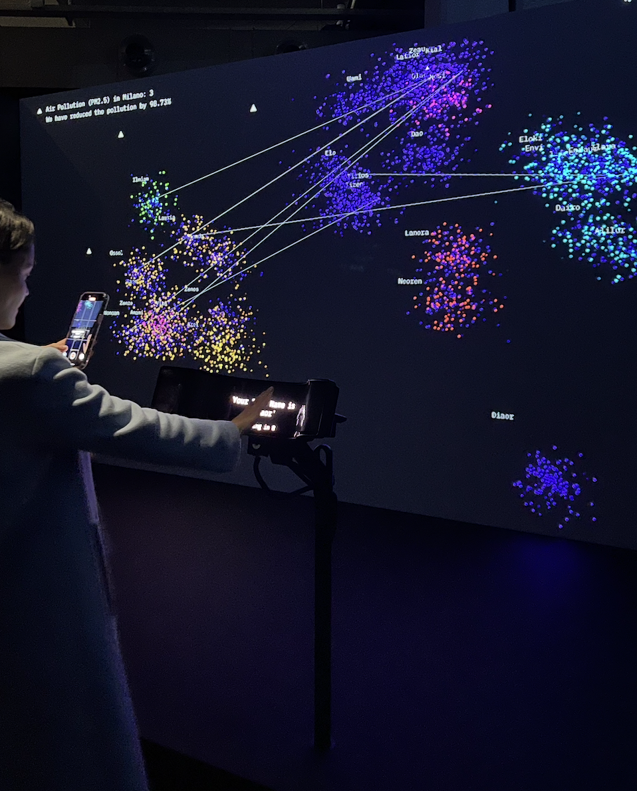
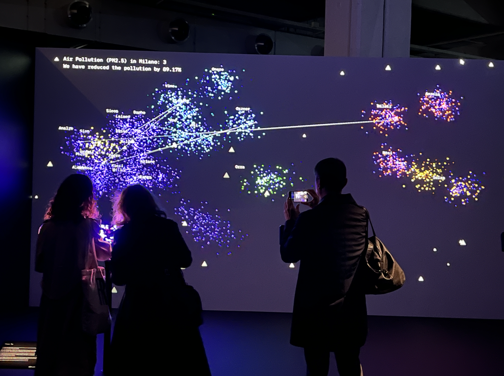
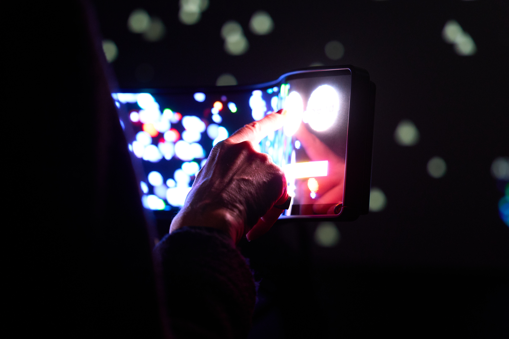
Lead Conceptual Development, Design, and Coding: Chloe Prock & Elizabeth McCaffry
Experience Design Assistant: Jasmine Yiming Sun
Advisor: Prof. Paolo Ciucarelli